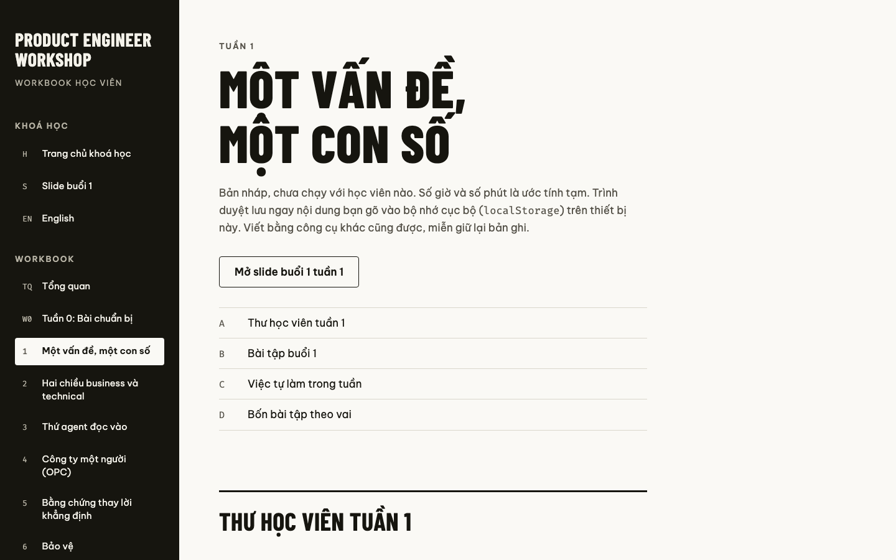
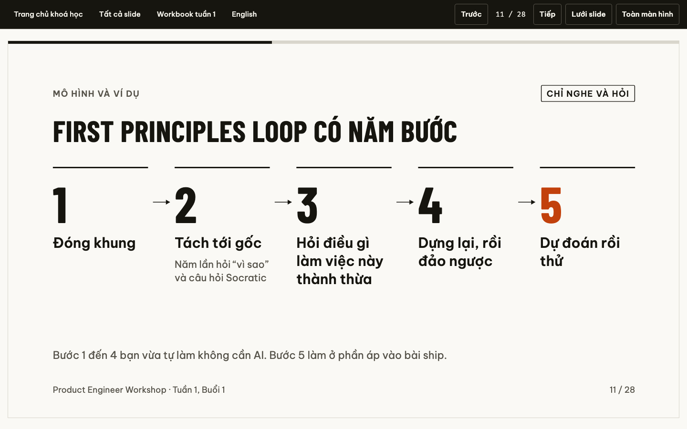

Tự tay ship một thay đổi đo được ngay trong công việc hiện tại sau sáu tuần.
Khoá học sáu tuần dành cho developer, designer và QA đang đi làm. Mỗi học viên chọn một việc thật ở công ty, tự tay ship (đưa vào sử dụng thật) thay đổi đó rồi báo cáo số đo trước sau.

Mỗi tuần bài ship tiến thêm một cột mốc, còn học viên lắp thêm một lớp agent
Học viên bám theo một thay đổi thật trong công việc (bài ship) suốt sáu tuần. Mỗi tuần bài ship tiến một cột mốc, còn hệ agent (AI tự làm nhiều bước) thêm một lớp mới. Mở thẳng workbook hoặc slide buổi 1 từ từng hàng bên dưới.
- W0 Tuần 0: Bài chuẩn bị Cột mốcChuẩn bị phỏng vấn đầu vào, nêu hai vấn đề dự kiến và gửi thư cho quản lý. Hệ agentChưa dựng hệ agent (chương trình AI tự làm nhiều bước).
- W1 Một vấn đề, một con số Cột mốcViết khung vấn đề gọn một câu và chọn con số dự kiến. Hệ agentBộ rule làm việc cá nhân (working rules).
- W2 Hai chiều business và technical Cột mốcChốt con số, mở giai đoạn đo trước khi sửa (baseline) và viết spec (bản mô tả kèm tiêu chí nghiệm thu). Hệ agentBản spec làm đầu vào cho agent.
- W3 Thứ agent đọc vào Cột mốcDựng ontology (bản đồ sự vật, quan hệ và nguồn) cho vùng việc, rồi build phần đầu bài ship. Hệ agentOntology, skill đầu tiên và agent thực thi (Maker).
- W4 Công ty một người (OPC) Cột mốcBản đầu tiên qua được agent chấm bài (Grader) theo tiêu chí nghiệm thu. Hệ agentĐội ba vai điều phối, thực thi, chấm bài (Coordinator, Maker, Grader) và lịch định kỳ.
- W5 Bằng chứng thay lời khẳng định Cột mốcQua gate (cổng kiểm tự động), đưa 1 đến 2 đồng nghiệp dùng thử rồi ship cho người dùng thật. Hệ agentGate biết báo đỏ và một routine chạy định kỳ.
- W6 Bảo vệ Cột mốcChốt hạn ship cuối, bảo vệ bằng lời và đo lại sau 2 đến 4 tuần. Hệ agentChuyển bài học từ các lỗi gặp phải thành phép kiểm tự động.
Hai biểu mẫu dùng chung để điều phối đội agent và xin phép chia sẻ kết quả
- K Bộ kit đội agent Mẫu này tách ba vai Coordinator, Maker và Grader qua file Markdown, kèm bảng phân quyền và bài thử cài sẵn lỗi. Dùng từ tuần 4.
- P Mẫu thư xin phép chia sẻ công khai Mẫu thư xin quản lý đăng ca làm thực tế (case study) đã xoá dữ liệu nội bộ. Dùng ở tuần 6.
Khoá học kéo dài sáu tuần, tối đa năm người và không thu thập dữ liệu
- Kho mã nguồn
- jangtrinh/product-engineer-workshop
- Đối tượng học
- Developer, designer và QA có sẵn tay nghề. Học viên đang trực tiếp làm sản phẩm, công cụ nội bộ hay quy trình thật, và có quyền đưa thay đổi vào sử dụng.
- Lịch học
- 6 tuần gồm hai buổi trực tiếp 2 giờ mỗi tuần kèm giờ tự làm. Sau khi hết tuần 6 khoảng 2 đến 4 tuần có buổi bảo vệ số liệu đo lại. Tối đa 5 người mỗi lớp.
- Phương pháp gốc
- Vòng lặp First Principles Loop cùng bốn trụ cột: tư duy hai chiều, ontology, quản trị kiểu công ty một người (OPC) và tự dựng đội agent.
- Dữ liệu và theo dõi
- Trang web không đặt mã theo dõi, nhưng có tải font từ Google Fonts. Nội dung bạn gõ nằm trong bộ nhớ cục bộ (
localStorage) trên trình duyệt và chép được ra Markdown. - Giấy phép
- Phát hành dạng mã nguồn mở có điều kiện (source-available) theo giấy phép PolyForm Shield 1.0.0. Miễn phí học và áp dụng vào công việc, không được bán lại.
Quy trình tự tách vấn đề trên giấy trước khi đưa AI vào phản biện
-
1
Chuẩn bị hai vấn đề và gửi thư cho quản lý từ tuần 0
Chọn hai vấn đề dự kiến từ công việc thật và tự hỏi ba lần “vì sao” trên giấy, không dùng AI. Sau đó gửi mẫu thư trong workbook tuần 0 để chốt phạm vi làm bài.
-
2
Tự tách trên giấy ở buổi 1 rồi mới dùng AI phản biện
Dành 20 phút đầu buổi để tách và dựng lời giải trên giấy, không mở AI. Tiếp theo, đối chiếu bài viết với mô hình lý thuyết và ví dụ mẫu. Sau đó học viên áp vào bài ship bằng công cụ AI cho phép.
-
3
Đo số liệu, chạy đội ba vai và bảo vệ bằng log thật
Theo dõi giai đoạn đo trước khi sửa (baseline) và giai đoạn đo sau khi ship trên thay đổi đang làm. Từ tuần 4, chạy bộ kit đội agent rồi mang log thật ra buổi chấm chéo và buổi đo lại.
Phương pháp cốt lõi, bốn trụ cột và giới hạn của khoá học
Năm bước của First Principles Loop
- Đóng khung. Phát biểu vấn đề gọn một câu, kèm phép thử thành công quan sát được.
- Tách tới gốc. Hỏi “vì sao” liên tiếp bằng sáu nhóm câu hỏi Socratic tới khi không tách nhỏ thêm được. Tách rạch ròi điều chắc chắn khỏi giả định.
- Hỏi điều gì làm việc này thành thừa. Nếu có câu trả lời, bài toán ban đầu đã đổi.
- Dựng lại. Chỉ dựng giải pháp từ những điều chắc chắn, rồi nghĩ ngược lại xem giải pháp có thể hỏng ở đâu.
- Dự đoán rồi thử. Viết dự đoán ra trước khi làm, rồi chạy một phép thử ít tốn công để kiểm xem dự đoán đó có sai không.
Bốn trụ cột nội dung
- Tư duy sản phẩm hai chiều. Đi từ mục tiêu kinh doanh xuống quyết định kỹ thuật, rồi đi ngược lên bằng số đo trước và sau khi sửa.
- Kỹ thuật dựng ontology. Xác định các loại sự vật, quan hệ có tên và một nơi gốc chuẩn (single source of truth) để agent đọc trước khi chạy.
- Quản trị khi vận hành agentic AI. Áp dụng kinh tế đơn vị (giá trị và chi phí mỗi đơn vị), giữ quyền sở hữu dữ liệu, phân quyền và đặt gate kiểm soát.
- Tự dựng hệ thống agent riêng. Lắp dần bộ rule làm việc, spec, ontology cùng skill, đội ba vai, gate biết báo đỏ và phép kiểm tự động.
Bên trong không gian học tập
Toàn bộ workbook, slide và bộ kit chạy bằng HTML, CSS và JavaScript tĩnh trên trình duyệt, không cần cài đặt.
-
Workbook giữ nguyên bài tập từ tuần 0 đến tuần 6 trên máy
Mỗi ô gõ vào tự lưu trong bộ nhớ cục bộ (localStorage), kèm nút chép ra Markdown để mang tới buổi chấm chéo. Tuần 1 gồm thư học viên, bài tập tại lớp và bài theo vai.
Mở workbook tuần 1 -

Sáu bộ slide buổi 1 gồm 174 trang mở đầu bằng câu hỏi cốt lõi của từng tuần
Mỗi slide có phím tắt điều hướng, lưới xem nhanh và bản in PDF. Riêng slide 11 tuần 1 minh hoạ bốn bước đầu làm trên giấy trước khi nối sang bài ship.
Mở slide 11 tuần 1 -

Bộ kit tách ba vai agent để tránh lỗi vừa làm vừa tự chấm bài
Từ tuần 4, ba vai Coordinator, Maker và Grader chạy ở ba cuộc chat riêng và trao đổi qua file Markdown. Trang này cũng ghi lại bài thử cài sẵn lỗi và các lần sửa bộ kit.
Mở bộ kit đội agent
Năm câu hỏi hay gặp trước khi tham gia khoá học
Khoá học Product Engineer Workshop dành cho những ai?
Khoá học dành cho developer, designer và QA đã vững tay nghề. Học viên đang trực tiếp làm sản phẩm, công cụ nội bộ hay quy trình thật, và có quyền đưa thay đổi vào sử dụng.
Mỗi tuần cần dành bao nhiêu giờ cho lịch học và bài tập?
Mỗi tuần có hai buổi học trực tuyến 2 giờ cho phần khái niệm và chấm chéo. Phần tự làm ước tính từ 3 đến 12 giờ tuỳ tuần. Sau khi hết tuần 6 khoảng 2 đến 4 tuần có buổi bảo vệ số liệu đo lại.
Có bắt buộc dùng một công cụ AI cố định nào cho workbook và bộ kit không?
Không. Học viên tự chọn bất kỳ công cụ AI nào công ty cho phép. Bộ kit đội agent ba vai chạy trên mọi cửa sổ chat nhờ chuyển file Markdown giữa ba cuộc chat riêng.
Workbook có thu thập dữ liệu hay gửi bài làm lên máy chủ không?
Không. Trang web không đặt mã theo dõi và không có máy chủ lưu bài, chỉ tải font từ Google Fonts. Nội dung gõ vào nằm trong bộ nhớ cục bộ (localStorage) trên trình duyệt và chép được ra Markdown bất kỳ lúc nào.
Tài liệu khoá học dùng giấy phép nào?
Toàn bộ tài liệu công khai phát hành dạng mã nguồn mở có điều kiện (source-available) theo giấy phép PolyForm Shield 1.0.0. Người dùng tự do học và áp dụng vào công việc, nhưng không được bán lại hoặc mở khoá học cạnh tranh.